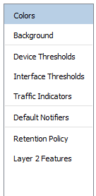
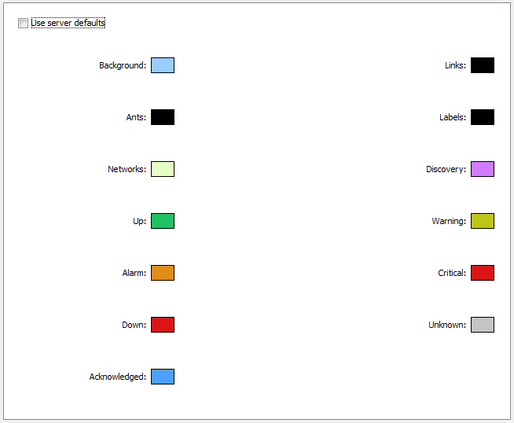
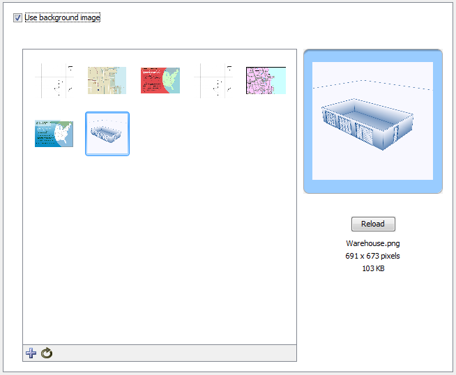
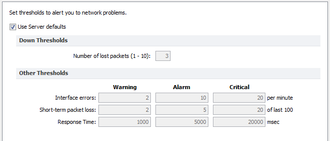
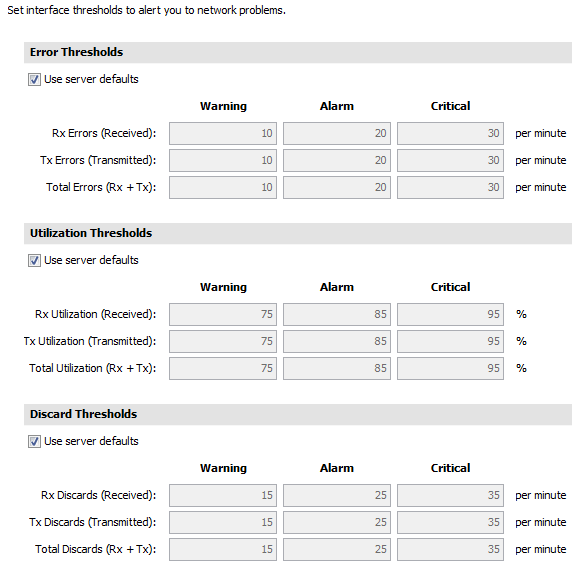
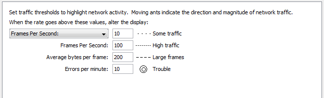
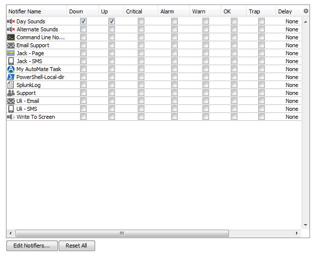
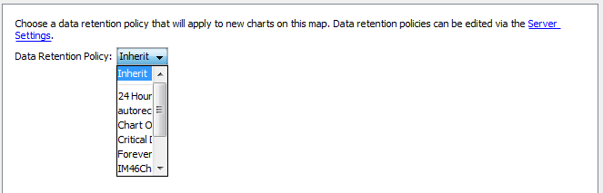
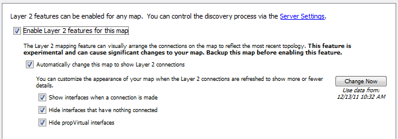

The Map Settings Window

Left pane of the
Map Settings Window
Use the Map Settings window to specify colors for the map, to specify a background
image, and to specify default thresholds and notifiers. Any changes you make
are saved with the map, and do not affect any other maps.
To view the Map Settings Window:
- Make sure the map is in Edit
mode (Pg 1).
-
From the Edit menu, choose Map Settings... The Map Settings
Window appears. In the left pane is a menu. In the right pane are the
settings for the selected section of the menu.
Setting a Map's Colors

The Colors pane of the Map Settings Window
To view and edit the colors for the current
map:
From the Appearance section of the Map Settings window, choose Colors...
The current colors for the map appear.
InterMapper has a default color scheme that is controlled by the default map colors (Pg 1) window. This color scheme applies to all new maps, and
to those maps for which the Use server defaults box is checked.
For an explanation of each color you can change, see Colors you can change (Pg 1), which explains the meaning of each default color.
To use a
set of colors different from the global color scheme:
- Clear the Use server defaults box.
-
Click the color box for the first color you want to change.
The Color Picker window appears.
- Click to choose a color, then click OK. The
new color appears in the color box you clicked.
- Repeat steps 2 and 3 for each color you want to change.
- Click OK.
To restore the current map to the default color
settings:
- Click to select the Use server defaults check
box.
- Click OK. The map uses the default colors.
The colors you defined are still saved with the map.
Adding a Background Image

Background Image pane of the Map Settings Window
You can define a background image for any map. The background image appears
behind the map contents - the devices, icons, and links on the map.
You might use a background image containing a floor plan of an office, and
move the items on the map to show the locations of each device in the office.
You might use an image containing street map of a city or topographic map
of a county or state.
For more information, see Background Images (Pg 1).
Setting a Map's Default Device Thresholds

The Device pane of the Map Settings Window
InterMapper can provide warnings or alerts when interface errors, packet
loss, or round-trip times get too high. You can set default thresholds for
all of these metrics from the Map Settings window.
- Use Server Defaults - check this box to override the map settings and use the server default settings.
- Down Thresholds
- Enter the number of lost packets required to
generate a Down state.
- Other Thresholds
- For each metric, in each column enter a value
required to generate the a Warning, Alarm, or Critical state.
Setting a Map's Default Interface Thresholds
Use the Interface Thresholds pane of the Map Settings window to set Error, Link Utilization and Discard thresholds for a specific map. These settings are applied to interfaces on each new device added to the map.
To create map-specific interface thresholds:
- Clear the Use server defaults check box for the threshold type you want to make specific to this map.
- Set the thresholds for the selected threshold type, as shown below.
- Click OK.
Note: You can also set thresholds for an individual link. For more information, see XXX.

The Interface Thresholds pane of the Map Settings Window
Controlling a Map's Traffic Indicators
Use traffic indicators to help you view network activity on a map. You can set the traffic levels at which "moving ants" appear to show you the level and direction of activity on a particular link.

The Traffic Indicators pane of the Map Settings Window
You can set the following values to control the appearance of traffic indicators:
- Traffic units - choose bytes or frames per second from a dropdown menu. This unit is used for traffic thresholds.
- Some traffic - enter the number (of bytes or frames per second) that represents some traffic.
- High traffic - enter the number (of bytes or frames per second) that represents high traffic.
- Large Frames - enter the number of bytes per frame that represents a large frame.
- Errors per minute - enter the number of errors per minute that represents a clear sign of trouble.
To set the default values for traffic indicators:
- In an editable map, choose Map Settings from the Edit menu.
The Map Settings window appears.
- In the left pane, click Traffic Indicators. The current
traffic indicator settings for the map appear in the right pane.
- Enter the settings you want to change, and click OK. The
map uses the new settings.
Note: Traffic indicators are part of InterMapper's "Animation" feature set. By default, animations are not turned on because they may require additional CPU resources. You can turn them on from the Animation Settings pane of the Preferences window (Pg 1).
Specifying a Map's Default Notifiers

The Default Notifiers pane of the Map Settings Window
Use the Map Settings window to specify the notifiers you want to attach to
new devices in this map by default.
To specify the default notifiers for the current
map:
- For each map state, select the check box for each notifier you want to
attach to that state. For more information, see Working With Notifiers (Pg 1).
To edit the available notifiers:
- Click Edit Notifiers... The Notifier List pane of the Server
Settings window appears, showing the available notifiers. For more information,
see Working With Notifiers (Pg 1).
Resetting the Default Notifier
If you have changed the default notifier, or have edited its settings, you can reset all of the devices on the map that use it to have the current default notifier or updated settings.
To reset the default notifier or its settings for all devices on the map:
- Click Reset All. All devices on the map that use the default notifier now use the current version of the default notifier.
Specifying a Map's Default Data Retention Policy
If you are using InterMapper Database to collect device and network data, you can specify a default retention policy for a map. This setting overrides any default policy set in the Server Settings window.
Use the Map Settings window to specify the Retention Policy you want to use with
new devices in this map. Data Retention Policies are defined from the Retention Policy pane (Pg 1) of the Server Settings window.
Settings your map's Retention Policies
Use the Retention Policy panel to choose the retention policy to be applied to new devices added to the map.

- Data Retention Policy - Choose a retention policy from the dropdown menu.
Setting your map's Layer 2 features
Use the Layer 2 Settings panel to turn on Layer 2 features for a map and to choose how Layer 2 connections should appear.
Notes:
- To use the Layer 2 features, you must enable Layer 2 collection in the Layer 2 Features pane of the Server Settings window.
- One option allows InterMapper to make changes to the map based on Layer 2 data. This can cause significant changes to your map. Help/Systems recommends that you back up the map before activating Layer 2 features.

- Enable Layer 2 features for this map - select this check box to turn on Layer 2 mapping for this map.
- Change Now - click this button to initiate the visual arrangement of connections on the map to reflect the most recent topology using Layer 2 data.
- Automatically change this map to show Layer 2 connections - select this box to allow InterMapper to edit the map automatically to show Layer 2 connections.
- Show interfaces when a connection is made - select this box to show Layer 2 interfaces when a connection is made.
- Hide interfaces that have nothing connected - select this box to limit the interfaces shown to those that have something connected to them.
- Hide propVirtual interfaces - select this box to hide interfaces whose ifType is propVirtual.